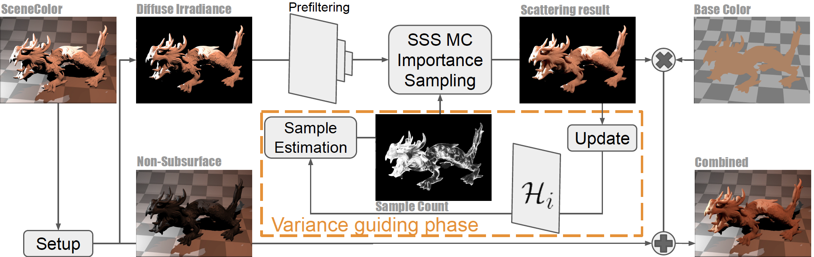

Abstract: In real-time applications, it is difficult to simulate realistic subsurface scattering with differing degrees translucency. Burley’s reflectance approximation by empirically fitting the diffusion profile as a whole makes it possible to achieve realistic looking subsurface scattering for different translucent materials in screen space. However, achieving a physically correct result requires real-time Monte Carlo sampling of the analytic importance function per pixel per frame, which seems prohibitive to achieve. In this paper, we propose an approximation of the importance function that can be evaluated in real-time. Since subsurface scattering is more pronounced in certain regions (e.g., with light gradient change), we propose an adaptive sampling method based on temporal variance to lower the required number of samples. We propose a one phase adaptive sampling pass that is unbiased, and able to adapt to scene changes due to motion and lighting. To further improve the quality, we explore temporal reuse with a guiding pass prior to the final temporal anti-aliasing (TAA) phase that further improves the quality. Our local guiding pass does not constrain the TAA implementation, and only requires one additional texture to be passed between frames. Our proposed variance-guided algorithm has the potential to make stochastic sampling algorithm effective for real-time rendering.
Major contributions
- Real-time adaptive sampling algorithm ($ O(1) $ time and space complexity)
- Real-time subsurface scattering sampling function approximation
News
- 2020.09.16: I3D 2020 Day 3 Streaming Live (9:00am - 10:50am, PST)
- 2020.05.11: Morgan Zepp, UMBC gaming researchers develop a new way to render characters with realistic skin. (EurekAlert!)
I3D Presentation
Video
BibTex
@article{xie2020real,
title={Real-time subsurface scattering with single pass variance-guided adaptive importance sampling},
author={Xie, Tiantian and Olano, Marc and Karis, Brian and Narkowicz, Krzysztof},
journal={Proceedings of the ACM on Computer Graphics and Interactive Techniques},
volume={3},
number={1},
pages={1--21},
year={2020},
publisher={ACM New York, NY, USA}
}
Adaptive sampling algorithm overview
